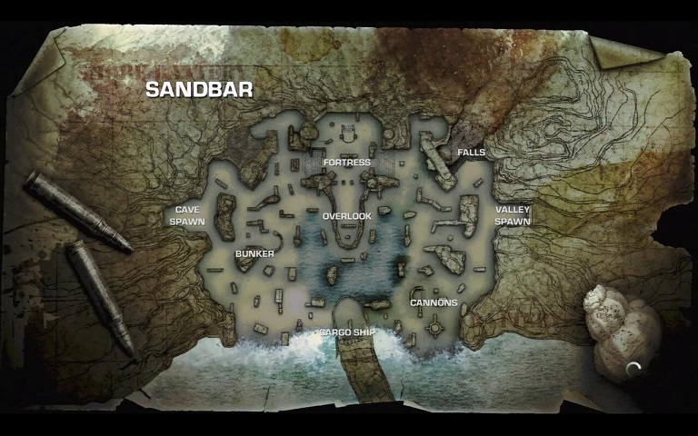
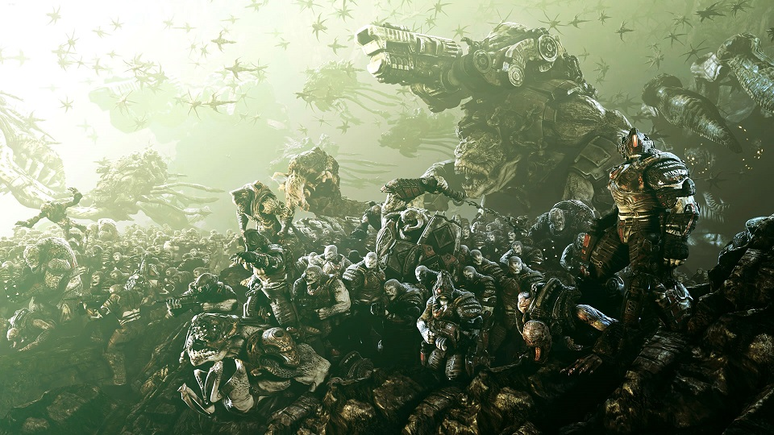

TASK
How to Beat Gears of War 3 Horde on Insane Difficulty
Completing Horde is done by basically surviving and killing all enemies that come your way. It is possible to win a round while dying
if you kill the last enemy as you die. Otherwise, dying makes you lose the round, at which point you can restart that round or start
from wave 1.
To play Horde, the player must choose a character and starting weapons and select a map to play on.

Then, once in the game, the player(s) must choose one of many command centers and establish a base. At this point the countdown begins and
the player may (and should) create fortifications. Once the countdown ends, all options to create, repair, or upgrade fortifications are
gone, and the Locust Horde attacks.

The player must then take cover and kill all the Locust without dying. Once all the Locust in the wave are dead, a new countdown begins
and the player may repair and upgrade fortifications using earned cash as well as buy ammunition or weapons. On the 10th wave, a Locust Boss
arrives and must be defeated along with all the other Locust attacking you. Bosses are usually very difficult and the Boss waves take many
tries to beat. Luckily, losing a round and restarting from that round does not affect the completion of Horde. However, it is best to complete
the waves quickly because it is best to beat Horde in one sitting, since there is no way to save your progress in the middle of a game.
It is very important to note that after each boss wave, all Locust for the next 10 waves receive an upgrade such as 2x Hit Points or 2x Attack Damage, and they stack up each time you
defeat a boss wave.